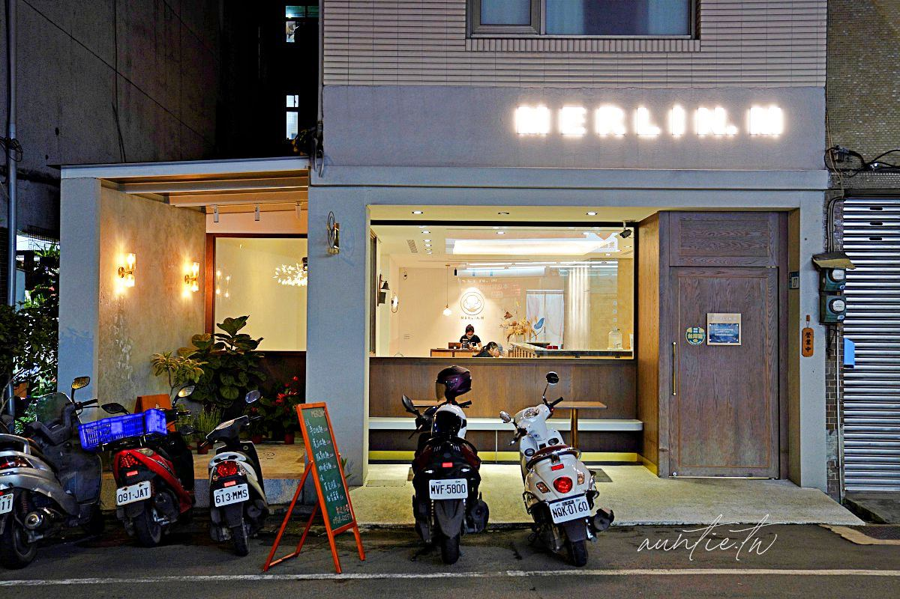
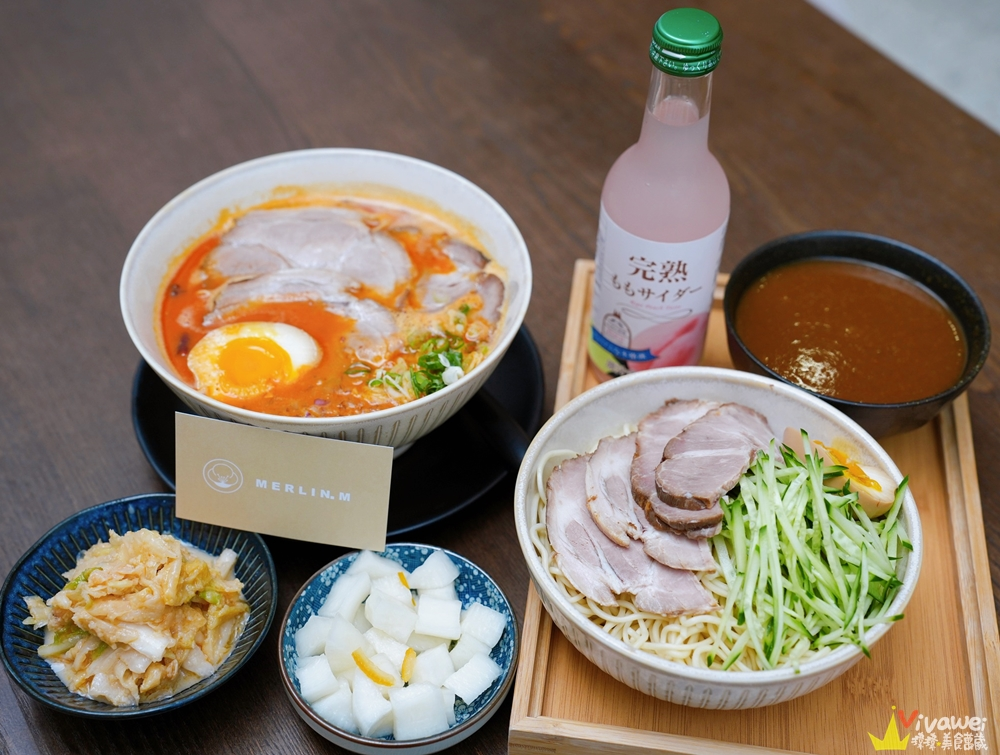

MERLIN.M梅林麵
google評價：4.7★
店家資訊
地址：新北市三峽區大仁路27號
營業時間：中午11:30至下午2:00，下午5:30到晚上8:00，星期一休息
店家電話：0968-622-371

推薦菜單
豚骨拉麵200元 漢方拉麵220元 辛口拉麵220元
老媽乾麵50元 椒麻乾麵70元
麻婆豆腐飯80元
舒肥椒麻雞80元 QQ豬耳凍60元 新鮮時蔬60元
水蜜桃汽水90元 葡萄汽水90元 柚子汽水90元
顧客評論
雖然外觀看起來是咖啡店，但實際上是一家拉麵店。而他販賣的不是日式拉麵，而是道地的台灣拉麵，像是豚骨拉麵使用自家做的台灣麵條，配上多種食材和中藥材熬煮的，口味和日是非常不一樣，湯頭鮮甜濃厚，麵條滑順有香氣，吃到最後也不會膩口。除了麵之外也有賣麻婆豆腐飯，麻婆豆腐的椒麻香氣特別重，非常下飯。